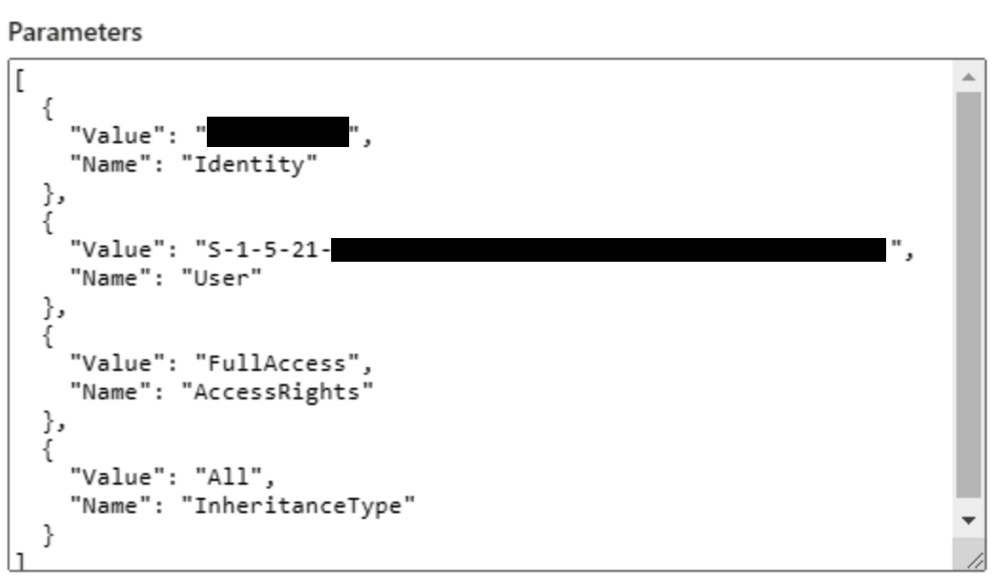

While reviewing Mailbox access delegation alerts in Microsoft Purview (compliance center) I started to come across a "SID-like" value in the place of the delegee's mailbox UPN or identifier. In order to determine who was granted access to the mailbox, I needed to convert this "SID" into a useful identifier for the mailbox. I attempted searching for this value in Active Directory, Azure AD, and Exchange Online but nothing was returned. After about an hour of research, I uncovered nothing.
A screenshot of the new alert.
On a whim, I decided to search across all columns in the OfficeActivity table in Microsoft Sentinel (Microsoft 365 activity log) to see if the value popped up anywhere. To my surprise, it did - under the column called MailboxOwnerSID!
I've pasted the KQL query below. I'm sure this will also work for the relevant table in 365 Defender.
OfficeActivity
| where MailboxOwnerSid == "MAILBOX OWNER SID HERE"
I currently have no idea how to search for this value in the Microsoft 365 / Exchange environment, however I'm sure it's possible. I will update this post if I uncover a way.